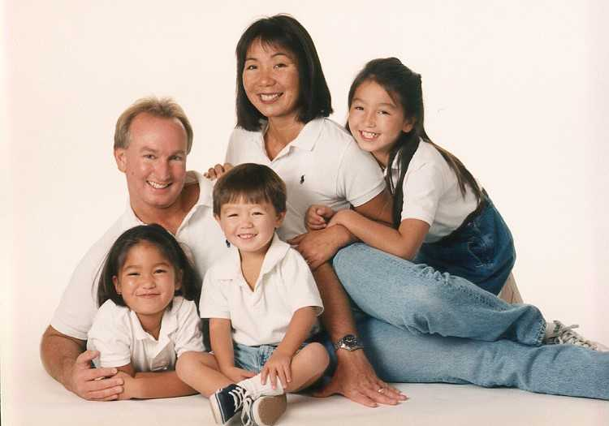

Interracial Marriages and Transracial Adoption
The term interracial is used to describe things that involve multiple different races. Fundamentally, we can liberally extend the term interracial families as to involving two different situtations, namely of interracial marriages between partners of two different races and transracial adoption (in this case, we consider the adoption of an Asian child by parents of different ethnicity).
Starting with interracial marriage, statistically, Asian women were more likely to marry outside their ethnicity, whereas Asian men were more likely to marry other Asian women. The main reason behind this is due to the effects of gender roles within Asian American families, with Asian women marrying other ethnicities in order to get away from the gender inequality that they face in Asian culture. On its own, interracial marriages receive a great deal of outside backlash and unfavorable treatment. Going back into history, many anti-miscegenation laws were passed to prohibit the marriages between whites and non-whites, which naturally included the marriages between whites and Asians. Despite the repealing of these laws, interracial marriages still encounter hostility and animosity to this day, ranging from being judged by others to being blatantly attacked for marrying outside their ethnicity and “betraying” their own culture. To some, it can lead to isolation or rejection by their family, making it a difficult decision to make. To add on, children of mixed ethnicities produced by interracial marriages also have to undergo challenges in coming to terms with and understanding their identities. Their interactions with their culture and family play a big part in their racial identifications, with negative experiences making it difficult for them to accept parts of their identities. Commonly, due to their physical appearances, behavior, or other factors, mixed Asians are treated as an outsider by both of their cultures by no fault of their own, and may feel the need to identify with only one side of their ethnicity.
Transracially adopted Asian children likewise encounter similar issues integrating into white society. For the most part, the vast majority of adoptee parents are white, and they choose to adopt an Asian child over other races due to the model minority myth presenting Asians as honorary whites who are able to fit into white society easier. Yet, this is often not the case, with the physical differences between Asians and whites making them an easy target for discrimination and racism. The level of discrimination that they face can be diminished based on their surroundings, with those living in a predominately-white area being further isolated than those living in a predominately-asian area due to not having the luxury of sharing similar physical appearances. Further, adoptee parents often employ the “colorblind” view of disregarding race as important with good intentions, but this can lead adopted children to hide their experiences of discrimination. Being adopted, the inability to fit into their adopted family’s culture can intensify traditional challenges of adopted children, such as feelings of belonging and fitting in.